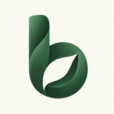

記餐，照你的方式
食物庫快速帶入，或直接輸入 PFC。調整份量，看懂每一餐的熱量組成。

BodyOSA LITTLE MORE BALANCE
從每一餐，慢慢了解自己的節奏。把飲食、活動與身體變化放在一起，還有一隻陪你過日子的小寵物。
了解訂閱方案為 iPhone 設計 · 正在準備上架
食物庫快速帶入，或直接輸入 PFC。調整份量，看懂每一餐的熱量組成。
整合經你授權的 Apple Health 活動，搭配體重與能量趨勢，了解長期變化。
選擇、命名你的寵物。記餐後牠會開心回應，吃飽後就躺下摸摸肚子。
BODYOS MEMBERSHIP
符合資格的新訂戶，免費試用 2 個月。